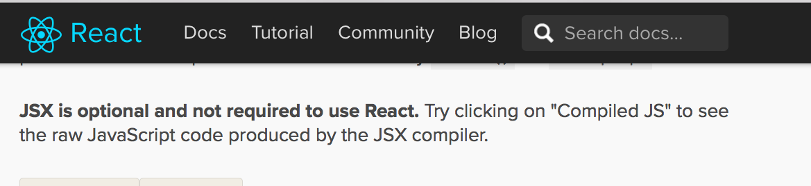
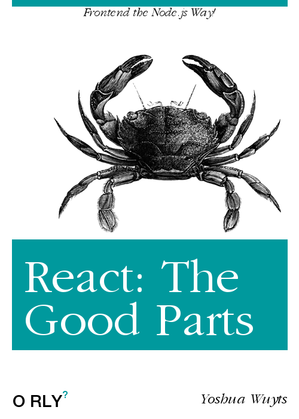
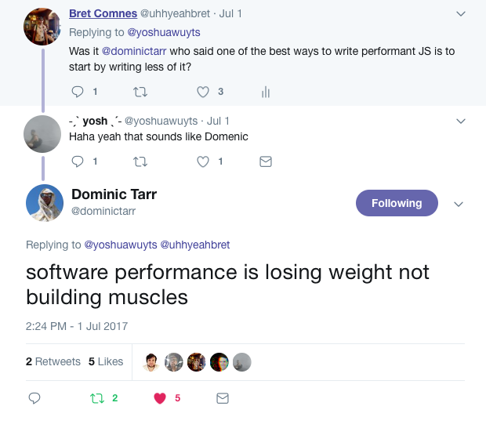
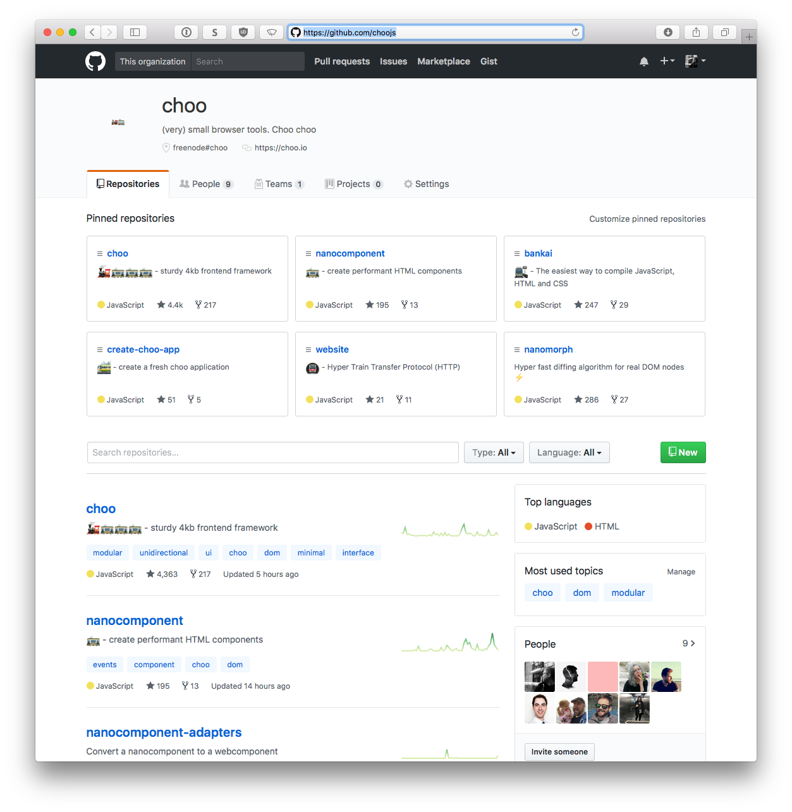
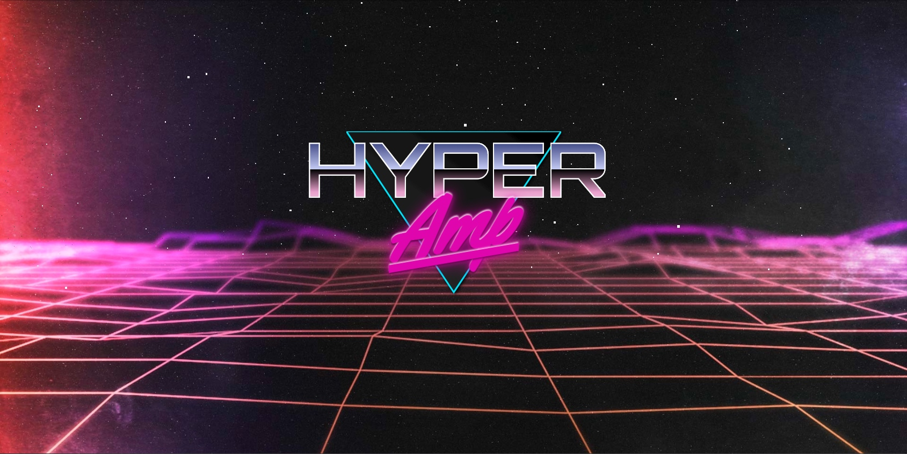
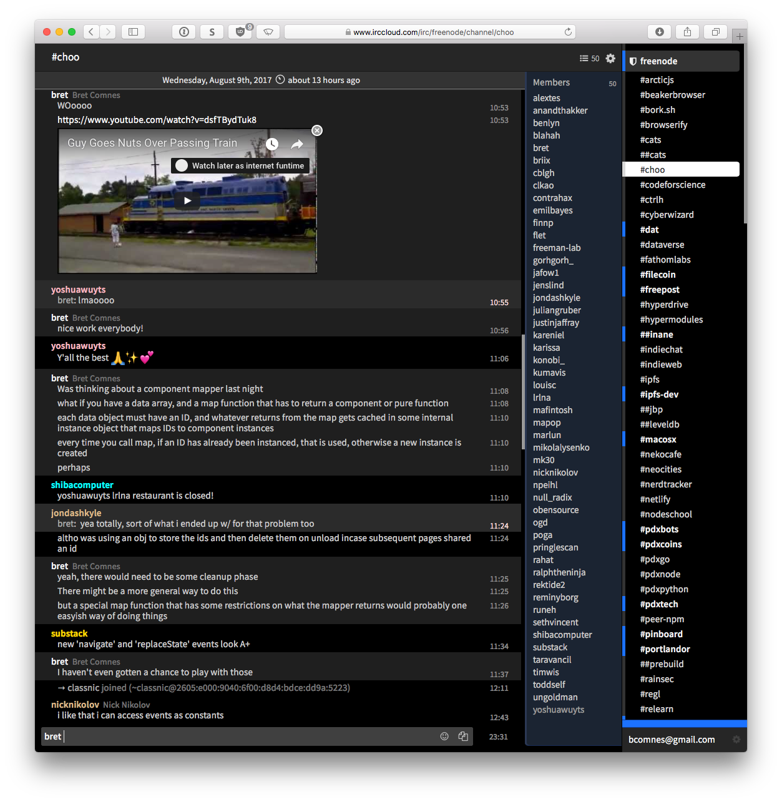

use ↔ to navigate
Choo is similar to React
⚠️🔥
(I say all of this with the upmost ❤️ for react and ecosystem)
What is React really?
Pure function font-end templates
Stateful component model with lifecycle events
Efficient DOM diffing between renders
Virtual DOM model enabling mutliple render targets
Syntetic events
Syntetic style properties
Automagic component traversal (something something immutable)
JSX/Babel/Webpack/Redux/Flow etc
~360,142 kB (but way bigger in practice)
Trivia: what else did I miss?
The React App Game (in theory):
Decide how you store app level data (redux)
Decide how you want to route between views (react-router yes, XML for routing ¯\_(ツ)_/¯)
Learn some fancy words for highly specific conventions: Reducer, HOC, Action, Action creator, Transducer, Middleware
Pass/Connect app state down as props
Somehow get your app state framework action handler into your components
That one-off API layer that one person on your team wrote but didn't document
How will you style your app?
Get paid 💵
React was a game changer 🎉
It matured a lot of really good ideas 🎊
It came with a lot of baggage 👹

Babel/JSX isn't optional in practice
Redux and other overly complex state management systems are not optional in practice
Keeping babel, and your team's 🚲🏚 eslint/postcss/wepack loader whateverthefuck pipeline dependencies working and up to date is decent job security
😬


Pure function font-end templates
Stateful component model with lifecycle events
Efficient DOM diffing between renders
Virtual DOM model enabling multiple render targets Synthetic events Synthetic style properties Automagic component traversal (something something immutable) JSX/Babel/Webpack/Redux/Flow etc ~360,142 kB (but way bigger in practice)
Pure function font-end templates bel
Stateful component model with lifecycle events nanocomponent
Efficient DOM diffing between renders nanomorph
Router (pushstate and hash) nanorouter
Querystrings nanoquery
Querystrings nanoquery
60fps cooperative interleaving (browser async: requestAnimationFrame) nanoraf
4kb
Assume commonJS runtime (e.g. Node.js, browserify, electron)
(but webpack + Babel ES20Whateverthefuck works too)
🚂 thats choo
What does it look like?
var html = require('choo/html')
var log = require('choo-log')
var choo = require('choo')
var app = choo()
app.use(log())
app.use(countStore)
app.route('/', mainView)
app.mount('body')
function mainView (state, emit) {
return html`
<body>
<h1>count is ${state.count}</h1>
<button onclick=${onclick}>Increment</button>
</body>
`
function onclick () {
emit('increment', 1)
}
}
function countStore (state, emitter) {
state.count = 0
emitter.on('increment', function (count) {
state.count += count
emitter.emit('render')
})
}
ITS JUST (modular) JS AND HTML
BASIC CONCEPTS
BASIC APIS
WEBAPPS FOR EVERYONE
ITS SUPER FUN 🚂🚃🚃🚃
CODE IS ART. ART IS FUN. IF IT ISN'T FUN ITS BAD ART. Or at least its not fun art.
Server static rendering
app.toString()
API Overview
View and store signature
function (state, emit) { }
var nanobus = require('nanobus')
var bus = nanobus()
bus.on('foo', function (color) {
console.log('color is', color)
})
bus.emit('foo', 'blue')
var morph = require('nanomorph')
var html = require('bel')
var tree = html`<div>hello people</div>`
tree = morph(tree, html`<div>nanananana-na-no</div>`)
tree = morph(tree, html`<div>teeny, tiny, tin bottle</div>s`)
var nanorouter = require('nanorouter')
var router = nanorouter({ default: '/404' })
router.on('/foo', function (params) {
console.log('hit /foo')
})
router.on('/foo/:bar', function (params) {
console.log('hit a route with params', params.bar)
})
router.on('/foo#baz', function (params) {
console.log('we do hash routes too!')
})
router.on('/foo/*', function (params) {
console.log('and even wildcards', params.wildcard)
})
router('/foo/hello-planet')
var Nanocomponent = require('nanocomponent')
var html = require('bel')
class Button extends Nanocomponent {
constructor () {
super()
this.color = null
}
createElement (color) {
this.color = color
return html`
<div style="background-color: ${color}">
Color is ${color}
</div>
`
}
update (newColor) {
return newColor !== this.color
}
}
var myButton = new Button()
button.render('green')

Choo 6 has lots of cool stuff
Upgraded render engines
Tl;Dr: things are faster, and more stable . Choo v6 includes the upgrades to bel@5 and nanomorph@5. This means up to 20x faster server rendering, and up to 10x improved browser rendering speeds. We've also fixed DOM node caching, and introduced sibling node reordering. 💯
create-choo-app bankai Better event system
Tracing
Query Strings + Current Location
nanocomponent@6
more! 🚂

Check us out! We're on IRC
freenode#choo

VIDEO
Mark zuckerberg is a lizard 🦎
11 SecondsVIDEO
🌍☮️❤️🚂